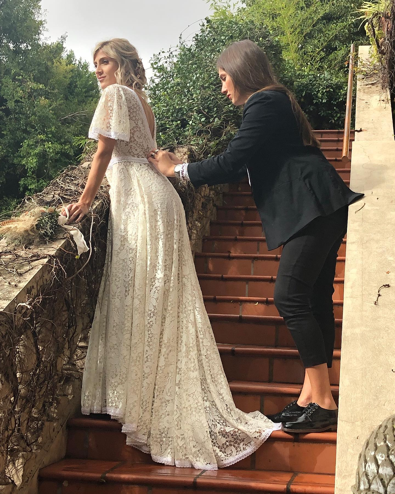
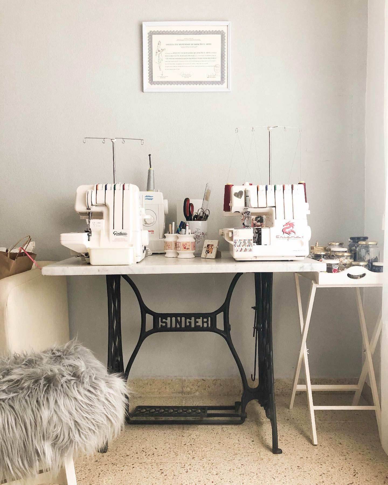

Sobre Mi
Hola! Soy diseñadora, patronista y modista por vocación. Mis dos grandes pasiones desde que era una niña: la costura y los vestidos de novia. Aprendí a coser siendo muy pequeña y crecí devorando revistas especializadas en moda nupcial. Aún a veces me sorprendo al darme cuenta del sueño cumplido.
Mi Principal objetivo: que aquellas personas que nos eligen se sientan guapas, pero sobre todo seguras, tranquilas y disfruten al máximo del maravilloso proceso que es la creación de su vestido mas importante. Porque pongo todo el cariño y dedicación en cada una de las prendas que creo para ustedes. Estudié diseño de moda en la Universidad de Buenos Aires y tras empezar mi trayectoria profesional como diseñadora en grandes empresas españolas como Zara y El corte inglés; en el año 2006 decidí abrir las puertas de mi atelier en Cofico, especializado en vestidos de novia de alta costura. Desde entonces ciento de novias han elegido mis diseños, los cuales consiguen reflejar la personalidad y estilo de cada novia y a la vez plasmar un estilo personal, fresco, elegante y un poco romántico.
Como Trabajo
Todos nuestros vestidos son fruto de un trabajo meticuloso y artesanal que se hace en exclusiva para cada novia. Cada puntada esta cargada de precision, cariño y todos nuestros vestidos se confeccionan artesanalmente Tanto en nuesto taller como en nuestras boutique colaboradoras encontraras una atencion totalmente personalizada, en la que intentaremos diseñar junto a cada novia su vestido Podemos diseñar un vestido desde cero partiendo de un boceto que haremos para ti
Pude crear un espacio donde las novias son las protagonistas. Atención personalizada, cercanía, empatía y trabajo artesanal son claves de esta marca. Son fundamentales desde el patrón hasta las telas mas delicadas para crear diseños auténticos, fluidos y sencillos, pero con detalles que los hacen especiales.
 To go places and do things that have never been done before – that’s what living is all about.